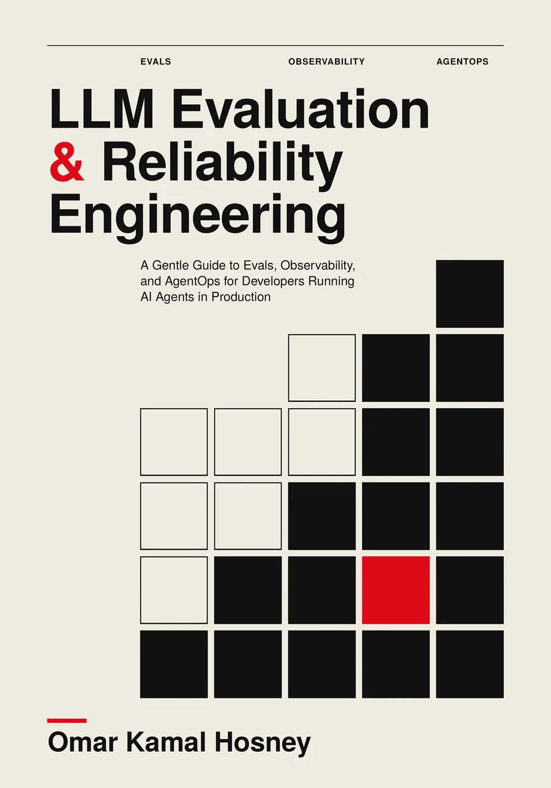

Part I
Stepping Into Production
“Can I trust what comes back, and what it does?”
Your AI agent shipped. Is it still working? Learn to measure it, see inside it, change it safely and keep it under control.
Paperback, 7 × 10 in, 460 pages. Companion code is free and open source.

A quick look at what the book covers, if you would rather watch than read.
Made with Remotion. Music generated with ElevenLabs. AI-generated content, labelled as such on YouTube.
"It works. Great. So whose is it?"
On Black Friday morning Sam's dashboard is green. Every request returned a clean 200. Yet for forty minutes a critical outage waited in the low-priority queue, filed by the AI assistant itself. Nothing crashed, so nothing alerted. Building it was one job. Owning it is another.
This book is for the developer who has called an LLM API, shipped a feature, and is now the person responsible for what it does when real people rely on it.
Nothing crashes. The output is simply wrong.
A good ticket in the wrong queueIt works, too slowly to be useful.
A 30-second wait before any replyFine on average, bad for a subset, or drifting.
One segment slides while the global number holdsIt works, and the bill doubles.
An agent loop burns the month's budget overnightIt does something it was tricked into.
A forged "supervisor note" triggers a creditOne fictional company, Crateway Market, and one support assistant called Relay, run through every chapter. Each chapter opens with something that went wrong, explains the idea in plain English, shows a small piece of Python you can run, and ends with one artifact to make for your own system.
Measure whether an LLM system is any good: evals, honest statistics, judges, agent grading, datasets and RAG.
Reliability and observability: retries, failover, traces, SLOs and error budgets, and the quiet decay you would never see.
Cost and capacity, prompts as code, evals in CI/CD, canaries, rollbacks and model upgrades.
Prompt injection, least privilege, audit trails, regulation, incident response and running the program.
Each Part answers one question and ends with a short level-up check: five yes-or-no questions about your own system.
“Can I trust what comes back, and what it does?”
“Is it any good, and can I prove it?”
“Does it stay up and stay good, and will I know when it does not?”
“Can I afford it, and can I change it safely?”
“Is it safe, and is it allowed?”
“What do we do when it breaks, and how does the team run this without heroes?”
Titles vary and are not settled. What matters is what you are accountable for, and that grows in a rough order. The book is built to climb it.
"It works." The output is checked and the tools are safe.
Part I"It is good, and I can prove it."
Part II"It stays up, stays good, stays affordable, and changes safely."
Parts III and IV"It is secure, governed and recoverable, and it runs without heroes."
Parts V and VIOpen a Part to see its chapters. Every chapter ends with questions and answers, and a deliverable you can take back to your own system.
What changes between “it works” and “it is in production”, the five new kinds of failure, the role ladder and the six incidents at Crateway.
A model call as a metered function, how it becomes a feature, the agent loop, and a map of twelve ways it fails.
The validation gateway, a repair loop that stops, tool contracts, and idempotency keys so a retry never pays twice.
Cases, pass criteria and graders you can trust. Build and run a 30-case eval in plain Python.
Why one run lies: pass@k, standard errors, 95% intervals, the bootstrap and paired comparison.
Judge prompts with anchored rubrics, five biases that make a judge lie politely, and validating a judge with Cohen's kappa.
Grade the outcome, not the reply: state checks, trajectories, trigger cases, simulated customers and sandboxes.
Golden sets, dataset cards, double-labeling, a contamination guard, synthetic data and the feedback flywheel.
Judge retrieval and generation separately, triage a wrong answer with two questions, and treat chunking as an experiment.
Why retries multiply, backoff with jitter, shared retry budgets, deadlines, circuit breakers and step guards.
Routers and adapters, failover that cannot flood the backup, service tiers, streams that die midway, cancellation.
Why status codes miss quiet failures: span types, a tracer in a page of Python, OpenTelemetry and handoffs.
Golden signals for an agent, SLIs and SLOs, quality SLIs from a judged sample, error budgets and burn-rate alerts.
Baselines and segment-aware bands, three kinds of drift, PSI, chi-square and KS tests, and alert routing.
Token economics, FinOps in small pieces, cascades and caching, and how to prove a saving without losing quality.
Versioned prompts, eval tiers on every pull request, and a non-inferiority gate that blocks or warns.
The release ladder, shadow testing, a self-rolling-back canary, rehearsing failure and the life of a model.
Prompt injection, excessive agency, layered guardrails, risk tiers, and safety evals that report over-refusal too.
Least privilege, audit trails, change control, a dated map of the EU AI Act, SOC 2 and NIST (not legal advice), human review.
When to declare, the containment ladder with a kill switch, compensating actions and the blameless postmortem.
A RACI sheet, on-call and runbooks, readiness reviews and game days, a maturity ladder and a 90-day plan.
Each chapter is built around a memorable picture: a suitcase for the context window, a fuse for the circuit breaker, a flight recorder for traces. Diagrams and charts are drawn by code from the same numbers the text uses. Click any image to enlarge it.
A scripted stand-in for the Relay assistant means you can run every example, break it, and watch the tests catch it. Every code listing printed in the book exists in the repository, every printed output is produced by that code, and the tests run on every change.
# Classify, back off with full jitter, honour Retry-After, respect a shared budget and a deadline. RETRYABLE = {408, 429, 500, 502, 503, 504, 529} # timeouts, throttling, transient server trouble def amplification(retries, layers): """Attempts that reach the provider for ONE request when every layer retries `retries` times.""" return (retries + 1) ** layers # ... inside call_with_retry: window = min(cap, base * 2 ** n) sleep = (retry_after or 0) + rng.uniform(0, window) # floor + jitter if clock.now() + sleep >= deadline: return f"{status}: no time left before the deadline" if not budget.allow_retry(): # asked last: a refusal costs nothing return f"{status}: retry budget is empty"
$ python3 -m venv .venv $ .venv/bin/pip install -r requirements-dev.txt $ .venv/bin/python -m pytest -q
A scripted Relay stand-in and a fake clock, so a 30-second cooldown takes zero seconds in tests.
From a metered model call and a validation gateway to a canary controller, an audit trail and a quarterly program report.
Printed listings must exist in the repo, printed outputs must be real program output, and CI runs on Python 3.10 to 3.13.
Open source under the MIT License. Vendor-library snippets live in clearly marked optional/ folders.
You need to have called an LLM API and be willing to read short Python. No data-science background required. Pick the path that matches your job.
About 190 pages that give you the core: measure, validate, retry, set targets, defend, respond, own.
Everything about measuring quality, then drift, CI gates, safe releases and safety evals.
Keep it up first, then measure it, then watch it, change it and respond when it breaks.
Every deliverable in one place, with blocking groups, owners and evidence dates.
Five forms for the artifacts the chapters ask for.
"If something is wrong right now": find the sentence closest to what you see, then what to do first.
One row per formula you will want at the desk, each pointing to the chapter that shows the working.
The libraries, standards and services the book names, with version, date and status as of 5 October 2026.
A developer's map of EU law, SOC 2 and NIST. Dated, and not legal advice.
Plus a glossary of 174 terms, an index of more than 300 terms, and a further-reading list.
It grew out of three video courses the author made on LLM evaluation, production reliability engineering and AgentOps. The author planned it, chose its running example and its incidents, and is responsible for what it says. The text and the code were generated with AI language models from the course materials and the author's plan, then directed, edited and checked by the author. The scene illustrations, the pictograms in the diagrams and the cover composition were generated with an AI image model; diagram layouts, labels and charts were drawn by code.
The book checks itself instead of asking for trust: listings must exist in the companion repository, printed outputs must be real, and the tests must pass on every change. Mistakes may still remain, and corrections are posted on the books page.
Developers who have called an LLM API, built a prototype or shipped a feature, and are now responsible for what it does in production. You need a little Python and a rough idea of an LLM API call. No data-science background is needed.
No. Every example outside the optional Tool Boxes runs offline against a small scripted stand-in for the Relay assistant, with no network and no key. You replace one function with a call to your own model when you are ready.
No. Tools appear as examples in clearly dated, skippable Tool Boxes, each with the version and the date it was checked. The ideas outlast the tools, and Appendix E lists them all in one snapshot.
Yes. Chapter 0 lays out three reading paths: a fast path of about 190 pages, an evals-first path and an ops-first path. If something is wrong right now, start with Appendix C, the symptom guide.
Yes, and the book says so plainly. The text and the code were generated with AI language models from the author's course materials and plan, then directed, edited and checked by the author. The scene illustrations and cover composition used an AI image model; diagrams and charts were drawn by code. The book also checks itself: listings and outputs are verified against the public code.
A 460-page paperback (7 × 10 inches), published independently and sold on Amazon. ISBN 979-8160444727.
On the author's books page, https://omkamal.github.io/books/index.html. Tools, models and regulations move quickly, which is why each one carries a version and a date.
The practical, gentle guide to knowing it works, seeing inside it, changing it safely and keeping it under control.
Get it on Amazon